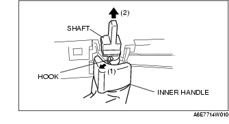

Inner handle removal/installation
1. Remove the front door trim.
2. Using a flathead screwdriver, press and hold the hook in the direction indicated by arrow (1), and pull the shaft in the direction indicated by arrow (2), remove the shaft.

3. Pull off the inner handle, and remove the door lock knob cable and inner handle cable.
4. Install in the reverse order of removal.